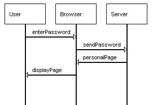
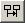
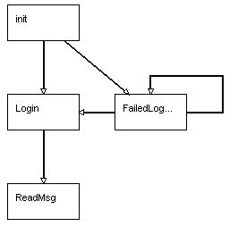

We will begin by constructing a simple behaviour model by drawing a couple of scenarios as basic message sequence charts (bMSCs) and then sequencing the scenarios by means of a high-level message sequence chart (hMSC). The scenarios will represent logging in to a website in order to check email.
Click on the "MSC Editor" tab. You should see a white editing canvas with one box labelled init. At the bottom of the window should be a toolbar as shown below. To start select new bMSC from the toolbar. It is the third button from the left of the toolbar. A dialog box will pop up asking for the name of the new bMSC. Type in "Login" and press ok. A new tab will be created in the MSC editor, and you will be presented with a white screen.

Click the new instance button (fifth from left on the toolbar) which will now be enabled. Choose New, click ok, and when prompted for a name, type "User". A box labelled user will now be shown in the editor with a line stretching down from it. Add another instance called Browser, and another called Server. The screen should now be as below.

Now we will add some messages between the instances. Click the new message button (on the right of new instance), select New, and enter the name "enterPwd". This message will represent the user entering their password in the browser. The cursor should now turn into a crosshair. Click once on the line coming down from User, and once on the line underneath Browser at about the same height. An arrow labelled enterPassword should join the two components. Add some more messages, sendPassword from Browser to Server, personalPage from Server to Browser and displayPage from Browser to User. You can drag the messages vertically if they do not end up in the right place. The chart should now look as below.

If you make any mistakes in entering the MSC, you can select an element of the chart by clicking on it (it should go red) and right-clicking to bring up an edit menu. This will allow you to rename or reverse arrows etc.Elements can be moved around in the diagram by dragging them. Items can also be deleted using the delete button (X) on the toolbar.
If you now click the hMSC tab at the top of the editor canvas, you will be returned to the original view, but there are now two boxes init and Login. Click the new transition tool (fourth from left), click once in the init box, and once in the Login box. An arrow will be drawn joining them. This sequences the scenarios. Init is just a starting point, but this arrow says that the first thing that can happen is Login. Now create another bMSC "Failed Login". This will be opened in the editor with all of the instances already present. Add messages to create the scenario shown below. Message that have been used before can be selected from the menu in the new message dialog box rather than typing their names again. They will automatically be placed on the diagram.

Return to the hMSC and add transitions to link the scenarios. init -> FailedLogin , FailedLogin -> Login , FailedLogin -> FailedLogin. Add the last one by clicking the new transition button and then clicking twice in the FailedLogin box. The resulting hMSC show be as shown below.

We now have a specification from which we can generate a behaviour model. In the main toolbar at the top of the window, click the generate button 

We can now step through a possible sequence of actions in the model. Go to the Check menu and select Run -> DEFAULT. A dialog box will appear with a set of actions listed. Any of the actions with a tick beside them may be performed in the current state. For the model we have specificed here, in the initial state, the only possible action is EnterPassword. Click on EnterPassword. In the draw window you can see the change in state of the LTS. Now click sendPassword. There is now a choice of whether to follow the behaviour where the user is authenticated or whether they are not. If you choose invalidPassword you will loop round and be able to enter a password again. If you choose personalPage you will proceed to the end of the trace.
You can load and save MSC specifications by using the File menu or toolbar buttons while the MSC Editor tab is selected. They are save as XML documents. If you have other tabs selected then textual or graphical descriptions of the behaviour model will be saved.
If you want to proceed to the web animator tutorial, add another scenario ReadMsg and update the hMSC as shown below. Save the MSC specification as an XML file. We will use this in the next tutorial.
 |
 |
 .
For a trivial example of a MSC specification with implied scenarios try
opening file trivialexample.xml from the MSC plugin.
For more information on implied scenarios refer to S. Uchitel. Elaboration
of Behaviour Models and Scenario-based Specifications using Implied
Scenarios. PhD Thesis, Imperial College London, January 2003.
.
For a trivial example of a MSC specification with implied scenarios try
opening file trivialexample.xml from the MSC plugin.
For more information on implied scenarios refer to S. Uchitel. Elaboration
of Behaviour Models and Scenario-based Specifications using Implied
Scenarios. PhD Thesis, Imperial College London, January 2003.